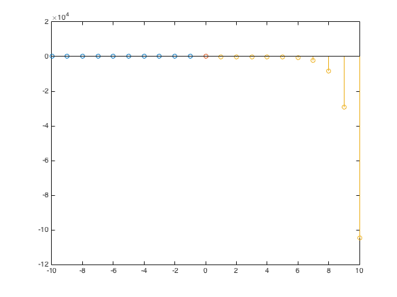
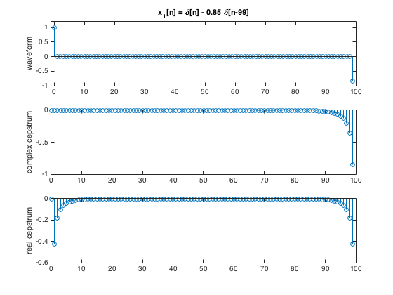
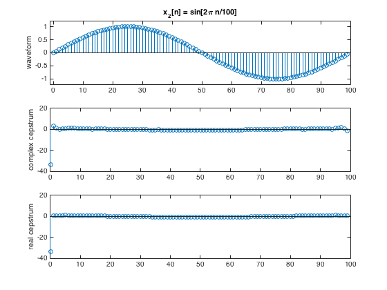

Contents
Part 2
t1 = [-10:1:-1];
y1 = 0.*t1;
t2 = [0];
y2 = log(8)+0.*t2;
t3 = [1:1:10];
y3 = ((1/6).^t3-(4).^t3)./t3;
stem(t1,y1)
hold on
stem(t2,y2)
hold on
stem(t3,y3)

Part 5
x1
n = [0:1:99];
x1 = [1 zeros(1,98) -0.85];
subplot(3,1,1); stem(n,x1);
title('x_1[n] = \delta[n] - 0.85 \delta[n-99]');
ylabel('waveform'); axis([-1 100 -1 1.2]);
x1_hat = cceps(x1);
subplot(3,1,2); stem(n,x1_hat);
ylabel('complex cepstrum');
c1 = rceps(x1);
subplot(3,1,3); stem(n,c1);
ylabel('real cepstrum');

x2
n = [0:1:99];
x2 = sin(2/100*pi.*n);
subplot(3,1,1); stem(n,x2);
title('x_2[n] = sin[2\pi n/100]');
ylabel('waveform'); axis([-1 100 -1.2 1.2]);
x2_hat = cceps(x2);
subplot(3,1,2); stem(n,x2_hat);
ylabel('complex cepstrum');
c2 = rceps(x2);
subplot(3,1,3); stem(n,c2);
ylabel('real cepstrum');

x3
n = [0:1:99];
x3 = 0.95.^n;
subplot(3,1,1); stem(n,x3);
title('x_3[n] = 0.95^n');
ylabel('waveform'); axis([-1 100 -0.5 1.2]);
x3_hat = cceps(x3);
subplot(3,1,2); stem(n,x3_hat);
ylabel('complex cepstrum');
c3 = rceps(x3);
subplot(3,1,3); stem(n,c3);
ylabel('real cepstrum');
x4
[y1,fs1,bit1,fmt1] = loadwav('test_16k.wav');
f = linspace(0,fs1,1024);
t = [0:1:399];
n4 = [0:1:640];
h = @(n) 0.54-0.46*cos(pi.*n./15);
r1 = h(n4);
x4 = y1(13000:13399);
x4b = conv(x4,r1);
X4 = fft(x4b,1024);
X4db = 20*log10(abs(X4));
subplot(4,1,1); plot(t,x4);
title('test16k.wav Voiced Speech');
ylabel('waveform');
subplot(4,1,2); plot(f,X4db);
ylabel('dB'); legend('log magnitude spectrum');
n4b = [0:1:1023];
x4_rcep = rceps(x4);
subplot(4,1,3); plot(t,x4_rcep);
ylabel('value'); legend('real cepstrum');
axis([-1 400 -5 12]);
y4 = x4_rcep(1:length(x4_rcep)/2);
L = zeros(1,length(y4));
L(1:15) = 1;
y4b = real(y4.*L');
subplot(4,1,4); plot(y4b);
ylabel('dB'); legend('lowpass liftered log magnitude spectrum');
x5
[y1,fs1,bit1,fmt1] = loadwav('test_16k.wav');
f = linspace(0,fs1,1024);
t = [0:1:399];
n5 = [0:1:640];
h = @(n) 0.54-0.46*cos(pi.*n./15);
r2 = h(n5);
x5 = y1(3400:3799);
x5b = conv(x5,r2);
X5 = fft(x5b,1024);
X5db = 20*log10(abs(X5));
subplot(4,1,1); plot(t,x5);
title('test16k.wav Unoiced Speech');
ylabel('waveform');
subplot(4,1,2); plot(f,X5db);
ylabel('dB'); legend('log magnitude spectrum');
n5b = [0:1:1023];
x5_rcep = rceps(x5);
subplot(4,1,3); plot(t,x5_rcep);
ylabel('value'); legend('real cepstrum');
axis([-1 400 -5 12]);
y5 = x5_rcep(1:length(x5_rcep)/2);
L = zeros(1,length(y5));
L(1:15) = 1;
y5b = real(y5.*L');
subplot(4,1,4); plot(y5b);
ylabel('dB'); legend('lowpass liftered log magnitude spectrum');